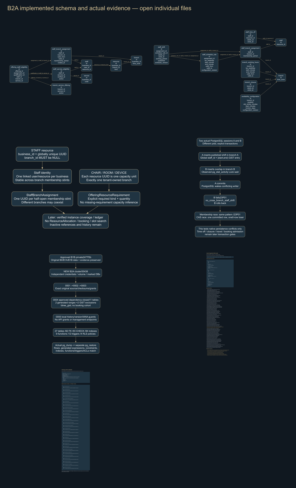
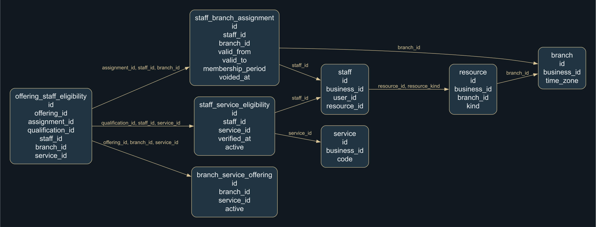
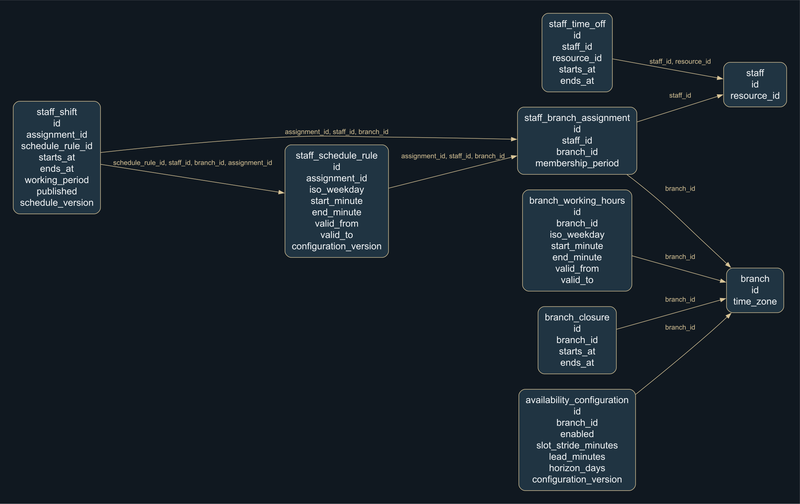
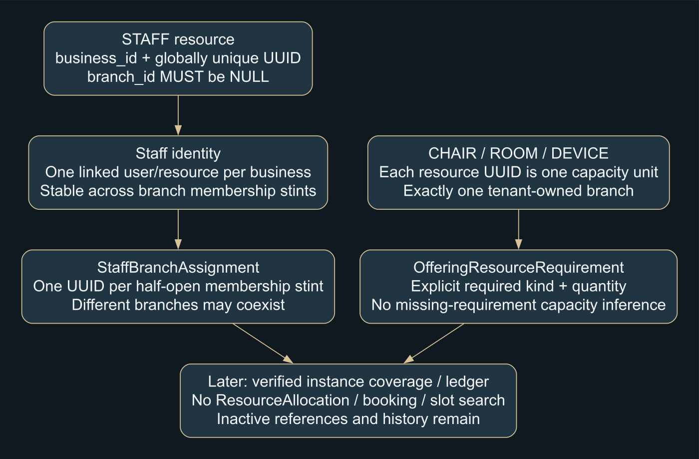
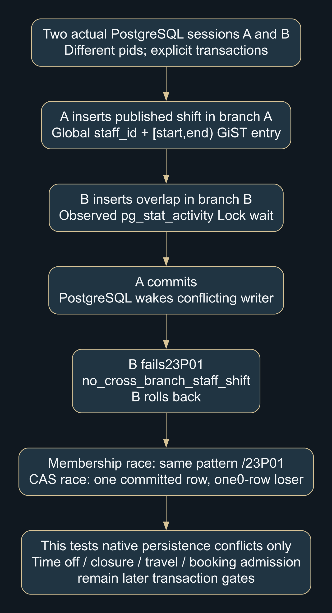
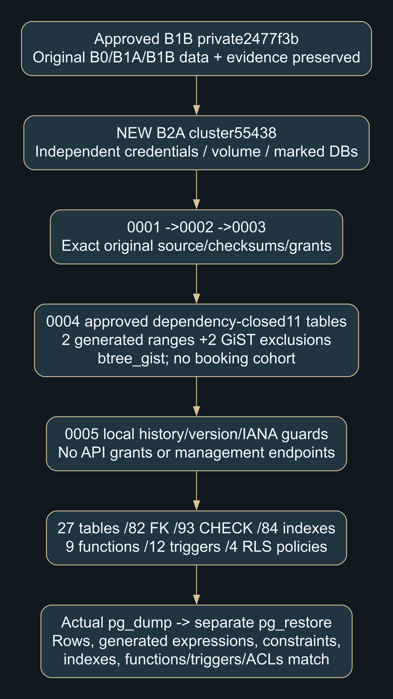
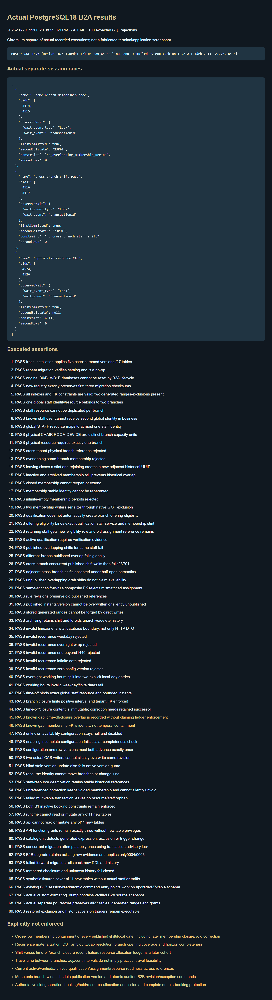
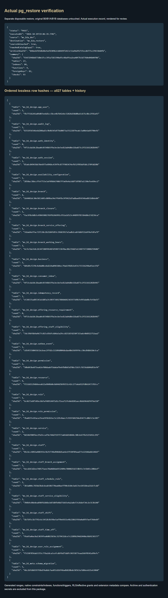

Exactly11 new tables;27 total. Native global staff shift/membership exclusions and local history/version guards. Existing session/admin code, prior migrations, Homepage and Booking remain unchanged.
Actual tests: B2A69 · B1B83 · B1A47 · B0 backend14 + SQL35 + Prisma · Frontend92. Actual separate backup/restore verified.
Limits: no B2B API, slot generation, booking/hold/allocation, exception reconciliation or complete booking-safety claim. Stop for B2A approval.








Diagrams derive from implemented fields/FKs and actual concurrency records; shared audit/business columns are omitted visually only and remain in the full dictionary. Actual evidence captures render recorded test/restore output, not terminal-window images. Private photos/fonts/auth tokens/dumps are excluded.